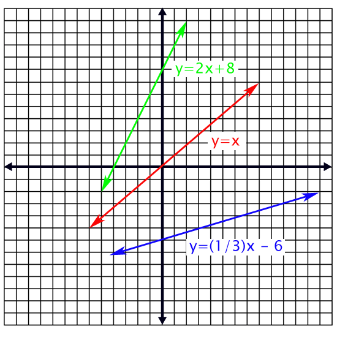
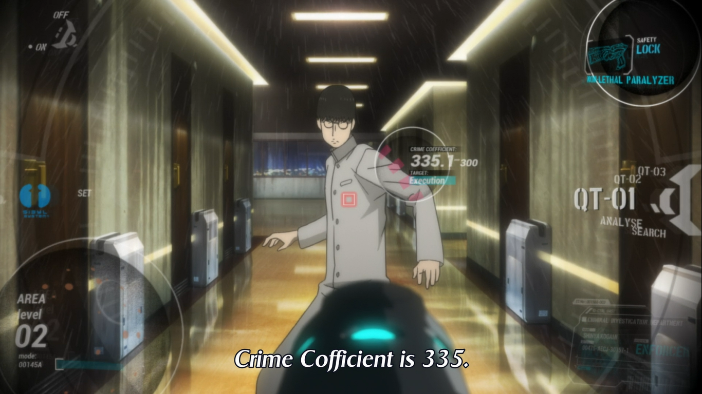

ML101
Francis Tseng (@frnsys)
What is "Machine Learning"?
An amalgamation of techniques & concepts from many different fields.
What is "Machine Learning"?
"machine learning is about using algorithms to infer things from data"
data -> algorithm -> answers (hopefully)
...but vague...
Motivation
What can you do with ML?
- Predict things
- Automate things/make decisions
- Gain insight into a system
- Emulate a system
Getting more specific...
Supervised Learning
- Provide the algorithm with input data and known answers (output) for each input
- The algorithm learns the relationship between the input and the output
- Returns a function which describes this relationship
Describing the world in functions
Phenomena can be described mathematically, i.e. by some function.
For example, there is some relationship:
- between a house's size and its sale price
- e.g. $\text{sales price} = 200 \times \text{square footage}$
- between a runner's speed and their finishing time
- e.g. $t = \frac{d}{s}$
- between a deer's weight and its height
Supervised machine learning algorithms try to uncover this function.
Deer weight & height
Let's say we have the following data about deer heights and weights.

We also have the weights of some other deer but forgot to measure their height.
If we can uncover a relationship between deer weight and height, we could estimate the heights of the deer we forgot to measure.
This is a perfect opportunity for machine learning!
We can use linear regression, in which we just try to fit a line to the data we have.
(Remember that a line is just a representation of a function)
A line's function:
$$ y = mx+b $$
- $m$ is the "slope"
- $b$ is the "intercept"
- $y$ is the "output" (what we want to predict)
- $x$ is the "input" (the data we want to predict from)
Together, $m$ and $b$ define how the line looks:

We say that $m$ and $b$ parameterize the function ($m$ and $b$ are called "parameters").
Here:
- $y$ = deer height
- $x$ = deer weight
- $m$ = ???
- $b$ = ???
Using known deer weights and heights (called training data),
linear regression will learn $m$ and $b$ for us.
Some guesses at the best fit line:

It looks like $m=1.8, b=50$ fits best.
So our algorithm would give us $m=1.8, b=50$ back and thus we have learned the function:
$$ y = 1.8x + 50 $$
For relating a deer's weight to a deer's height.
This function is called the hypothesis, and we can now use it to estimate deer heights given deer weights.
Say we had a deer that weighed 70kg but wanted to know it's height. We just do:
$$ 1.8(70) + 50 = 176\text{cm} $$

How does learning happen?
How does the algorithm come up with good values of $m$ and $b$?
It varies, but usually via a cost or objective function.
This tells the algorithm how "wrong" it is with its current guesses for $m$ and $b$ on the training data.

The algorithm iteratively tries different parameters (i.e. different guesses at the underlying function) until it can (approximately) minimize this error.
Computing Crime Coefficients
The following example is based off of the show Psycho-Pass.

Say we live in a world where the government uses some equation to calculate a crime coefficient for each individual (which measures how threatening someone is to society).
We want to reverse engineer this equation and learn how these crime coefficients are computed.
A friendly whistleblower has leaked us a dataset of crime coefficients, along with other values (features) we suspect are used to compute it:
This data set includes, among other things, the following:
- their latest heart rate (people who are about to commit a crime are probably very excited/anxious)
- their number of Facebook friends (people who have little connection to society have little interest in preserving it)
- whether or not they are related to a criminal (because crime is genetic, amirite?)
- their known crime coefficient
With this data and the known crime coefficients (our training data), we can use a machine learning algorithm to learn the relationship between the features (heart rate, number of Facebook friends, and criminal relation) and the crime coefficients.
~ notebook time ~
The most important part of machine learning
The most critical part of all forms of machine learning is representation.
How do you take your phenomena or data and translate into a form which the computer can process? What are the important signals (features) that represent what we want to predict?
The process of coming up with a good representation for your problem is called feature selection or feature engineering (more art than science).
In our case, we used heart rate, criminal relation, and number of Facebook friends. But we could have used anything we had data for.
In a machine learning competition for identifying whales by their sound, Daniel Nouri framed the problem as one of image recognition.

He represented the audio as images (spectrograms) and performed extremely well on the challenge. (h/t Johann Diedrick)
The other most important part of machine learning
- Data is a crude approximation
- A lot of human subjectivity is involved
- We relied on a lot of stereotypes and conjecture for our crime coefficients
thanks
~ @frnsys